This guide covers the four Alchemy specialization trees in Midnight: Potion Prowess, Fluent in Flasks, Transmutation Authority, and Alchemical Mastery. I made 3 builds with step-by-step point allocation, one for getting the flask duration bonus (raiding & M+), one for selling consumables on the AH, and one for making gold with transmutes.
Getting Knowledge Points
This guide is only about builds and where to put your points. If you need help finding Knowledge Points or need a leveling path, check out these guides:
Recipes & Knowledge Points Leveling Guide (1 - 100)
Timeline & Unlock Pace
You can get around 40-50 Knowledge Points on your first day from first crafts and one-time treasures, plus 10 more if you have enough renown to buy the Knowledge book. After that, you get about 15 per week from weekly quests, treasure drops, and treatises.
The builds below are based on that first 40-50 point mark, and I added suggestions for what to do after that as you get more points.
Specialization Overview
| Specialization | Description |
|---|---|
| Potion Prowess | Potion recipes split into two branches: Void Potions and Light Potions. Also unlocks the Potion Cauldron recipe at 30 points. |
| Fluent in Flasks | Flasks and phials, plus a passive duration bonus early in the tree. Also unlocks the Flask Cauldron recipe at 30 points. |
| Transmutation Authority | Mote transmutes, material conversions (leather into ore, fish into gems, etc.), the Wondrous Synergist daily craft, and the Alchemist Stone trinket. |
| Alchemical Mastery | Crafting stat boosts for all Alchemy. Separate Resourcefulness branches for flasks, potions, and reagents. |
Best Profession Gear and Stats for Alchemy
Which stat you want depends on what you're crafting. The simple rule: if a craft can Multicraft, use Multicraft. If it can't, use Resourcefulness.
How do you know if it can Multicraft? Check the recipe in your profession window, if you see Multicraft listed on the right side, it can Multicraft. If not, it can't.
- Flasks, potions, and phials can Multicraft, so use a Multicraft tool with a Multicraft enchant. Every proc gives you extra items for free.
- Mote transmutes and Wondrous Synergist can also Multicraft. Same tool.
- Material transmutes (Bouquet of Herbs, Box of Rocks, School of Gems) cannot Multicraft. The only useful stat here is Resourcefulness.
If you're mainly crafting consumables or doing mote transmutes, a Multicraft tool is your default. If you also do material transmutes, keep a Resourcefulness tool to swap in.
Builds & Talent Trees
Which Build Should You Choose?
Pick the one that fits your playstyle. The Selling Consumables build has sub-paths for flasks, potions, and phials.
- Extra Flask Duration: Start here if you raid or do Mythic+. Gets you the flask duration increase first, then branches into selling.
- Selling Consumables: Maximizes Multicraft and Resourcefulness for AH profit. Pick one product line (flasks, potions, or phials) and go deep.
- Transmutes: Gold making through daily cooldown crafts and mote conversions.
Extra Flask Duration
This is not a full build on its own. If you play any kind of M+, raiding, or any content where you regularly use flasks, make sure to start here. It's almost the same as the Flask Selling path, but you put 5 more points into Fluent in Flasks to maximize the duration increase.
Put 15 points into Fluent in Flasks root node. You unlock the flask and phial duration increase at 5 and 15 points.
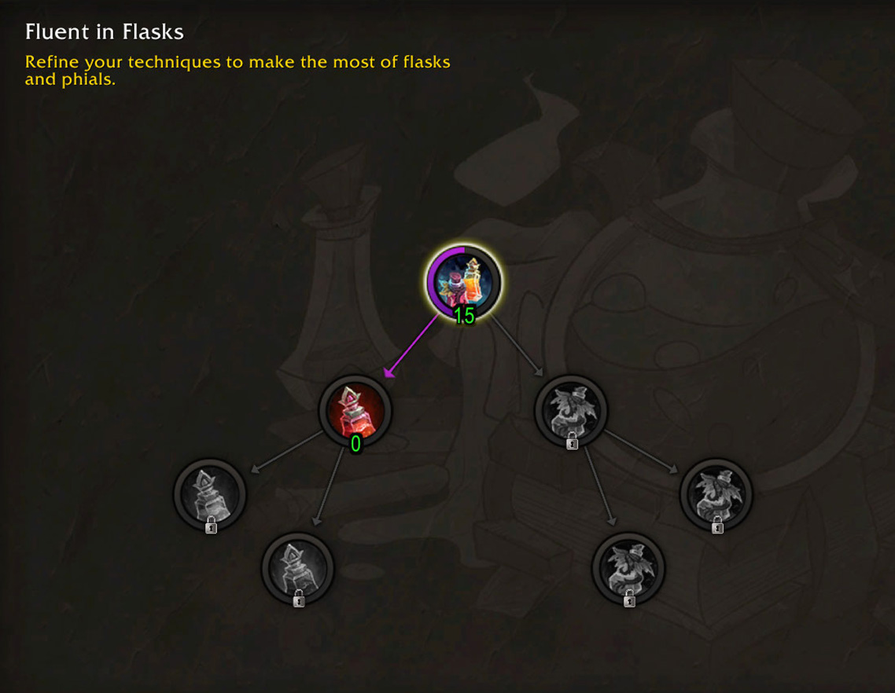
Once you're done here, just pick the Flask build in the Selling Consumables tab. That's the best follow-up for most players.
Selling Consumables
This build is for selling consumables at the Auction House. Pick one product line and go deep before branching out.
Pick Your Path
- Flasks: Highest demand. Every raider and Mythic+ player needs them.
- Potions: Same as flasks, high demand. Every raider and Mythic+ player needs them.
- Phials: Smaller market but less competition. I don't recommend this unless you know what you're doing.
Where to Spend Points
Phase 1: Multicraft (0-40 Points)
- Put 10 points into Fluent in Flasks (root node).
- Put 10 points into Sin'dorei Specialist.
- Put 20 points into Flask Abundance.
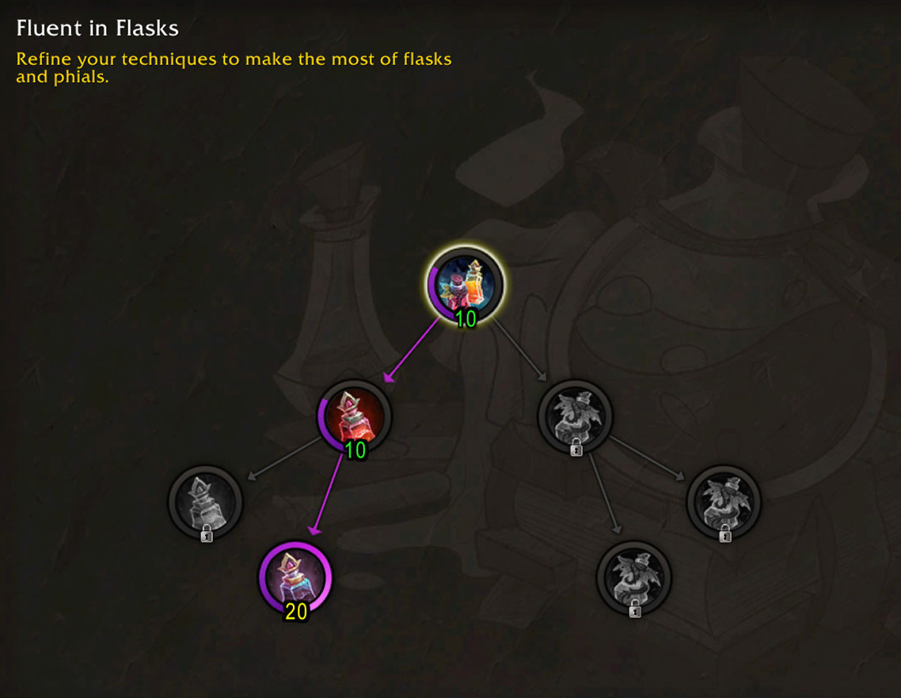
Phase 2: Resourcefulness (40-70 Points)
- Put 10 points into Alchemical Mastery.
- Put 20 points into Recycle. Resourcefulness means you sometimes use fewer materials. Combined with Multicraft, this is how you actually make profit on the AH.
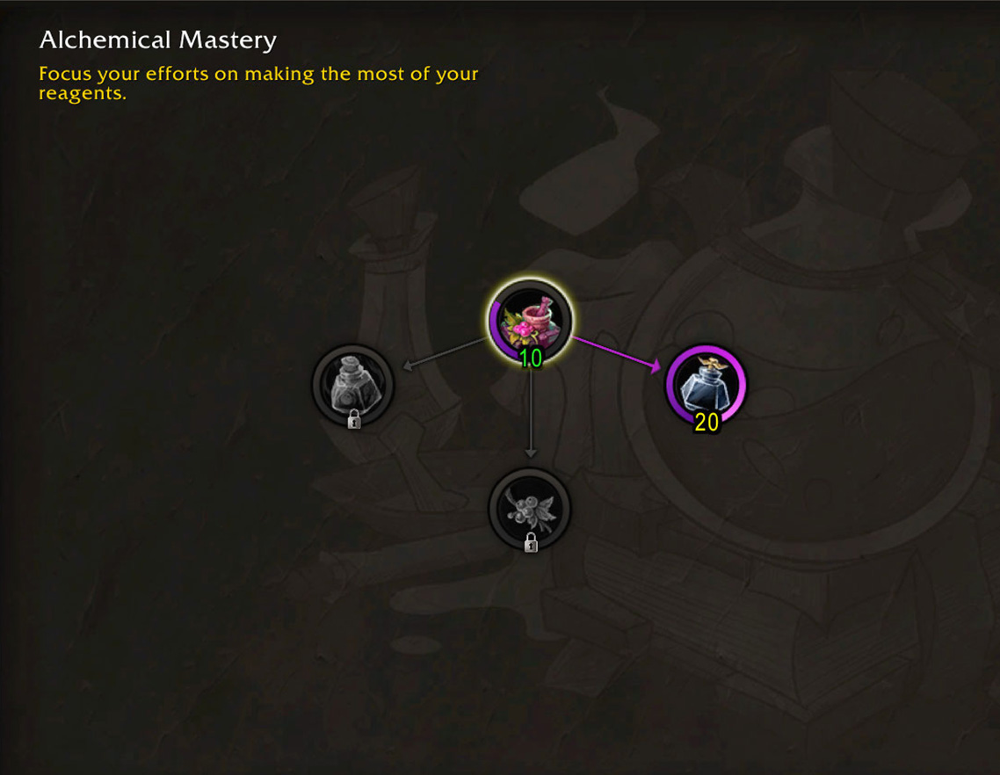
Phase 3: Gold Quality + Cauldrons (70-130 Points)
Now fill out everything that increases your skill so you can craft Gold Quality flasks. Basically max out the nodes you already put points into, in this order:
- 20 points into Fluent in Flasks. This unlocks the Cauldron of Sin'dorei Flasks recipe.
- 20 points into Sin'dorei Specialist
- 20 points into Alchemical Mastery.
Phase 1: Multicraft (0-40 Points)
- Put 10 points into Fluent in Flasks (root node).
- Put 10 points into Haranir Secrets.
- Put 20 points into Phial Abundance.
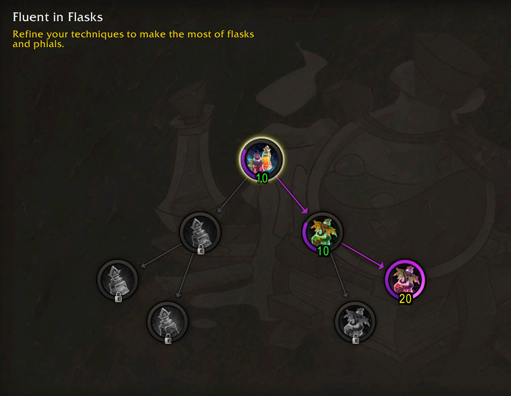
Phase 2: Resourcefulness (40-70 Points)
- Put 10 points into Alchemical Mastery.
- Put 20 points into Recycle. Resourcefulness means you sometimes use fewer materials. Combined with Multicraft, this is how you actually make profit on the AH.
Phase 3: Gold Quality + Cauldrons (70-130 Points)
Now fill out everything that increases your skill so you can craft Gold Quality phials. Basically max out the nodes you already put points into, in this order:
- 20 points into Fluent in Flasks.
- 20 points into Haranir Secrets.
- 20 points into Alchemical Mastery.
Phase 1: Multicraft (0-40 Points)
- Put 10 points into Potion Prowess (root node). Unlocks the sub-specializations.
- Put 10 points into Path of Void or Path of Light. Unlocks the Multicraft node.
- Put 20 points into Prolific Potioneer - Void or Light. Max this out for Multicraft.
Light Potions
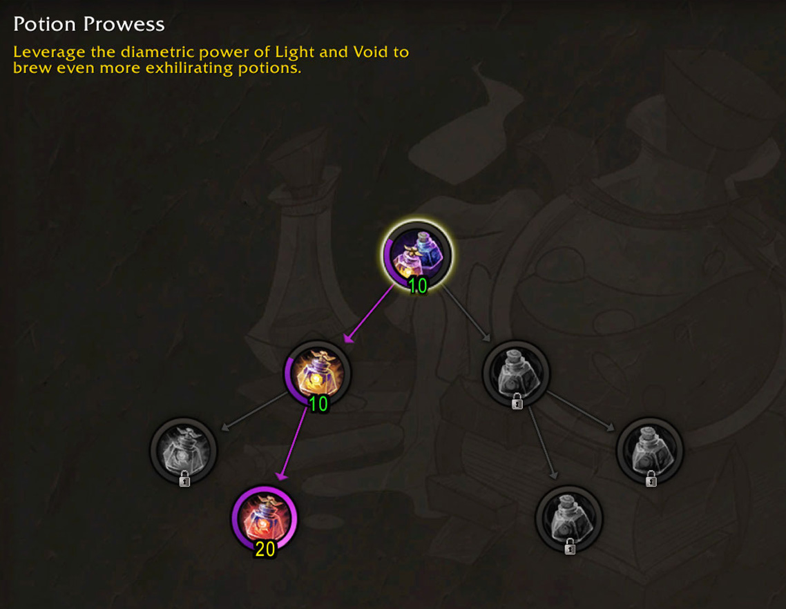
Void Potions
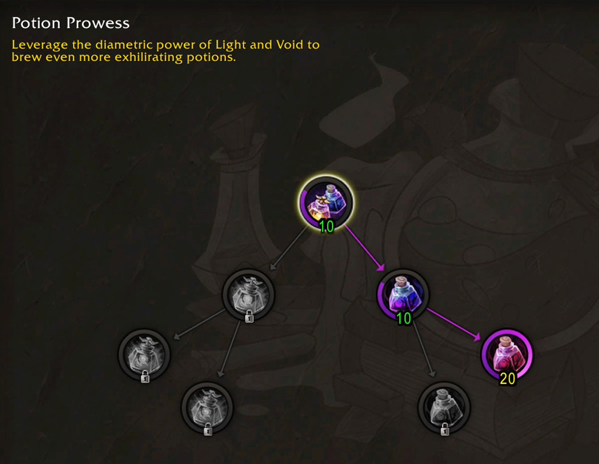
Phase 2: Resourcefulness (40-70 Points)
- Put 10 points into Alchemical Mastery.
- Put 20 points into Reuse. Resourcefulness for potion crafts.
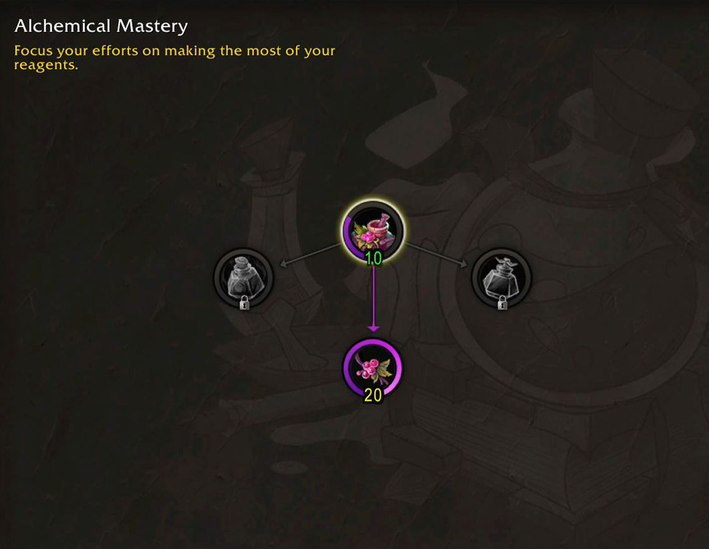
Phase 3: Gold Quality + Cauldron (70-130 Points)
Now fill out everything that increases your skill so you can craft Gold Quality potions. Basically max out the nodes you already put points into, in this order:
- Max Potion Prowess to 30. This unlocks the Voidlight Potion Cauldron recipe.
- Max Path of Void (or Light) to 30.
- Max Alchemical Mastery to 30.
Next Steps
After 130 points, branch into a second product line. If you started with Flasks, add Potions (or the other way around). You can also go into the other sub-path within your tree to cover more recipes.
For your profession tool, use a Multicraft tool with a Multicraft enchant. Multicraft is the most important stat for consumable sellers.
Transmutes
The Two Types of Transmutes
Transmutes fall into two categories. Mote transmutes and the Wondrous Synergist daily can Multicraft, so you want Multicraft stats for those. Material transmutes cannot Multicraft, so Resourcefulness is the only useful stat. Resourcefulness works for both types, so it's always worth having. This matters when you pick your profession tool and where you spend your points.
Where to Spend Points
Most transmuters will want the Multicraft build since mote transmutes and the Wondrous Synergist daily are where the gold is. Material transmutes (Bouquet of Herbs, Box of Rocks, School of Gems) can't Multicraft, but they still benefit from the Resourcefulness you pick up along the way.
Phase 1: Multicraft + Daily CD (0-30 Points)
- 10 points into the Root node. Unlock Metamorphic Mastery and Synthesis Synergy. Synthesis Synergy will teach you the daily transmute Wondrous Synergist
- 20 points into Metamorphic Mastery
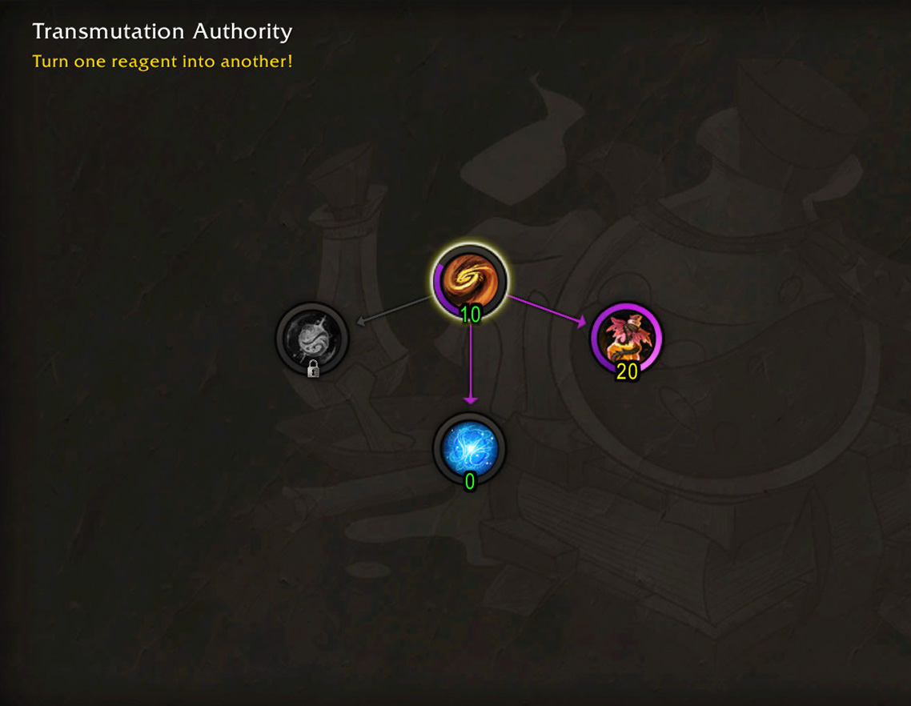
Phase 2: Resourcefulness or CD Reduction (30-60 Points)
You can either go into the Resourcefulness nodes to save materials on all your transmutes, or put more points into Synthesis Synergy to reduce the Wondrous Synergist cooldown. With CD reduction, you can craft the daily more often for extra procs and more Multicraft chances on your motes.
Which one is better depends on the Wondrous Synergist price. If the daily CD craft is worth a lot on the AH, reducing the cooldown will make you more gold. If it's not worth much, go for Resourcefulness to save materials on all your crafts. I'll update this with more specific recommendations once the market settles.
Option A: CD Reduction
This drops the cooldown from 18 hours to around 9 hours.
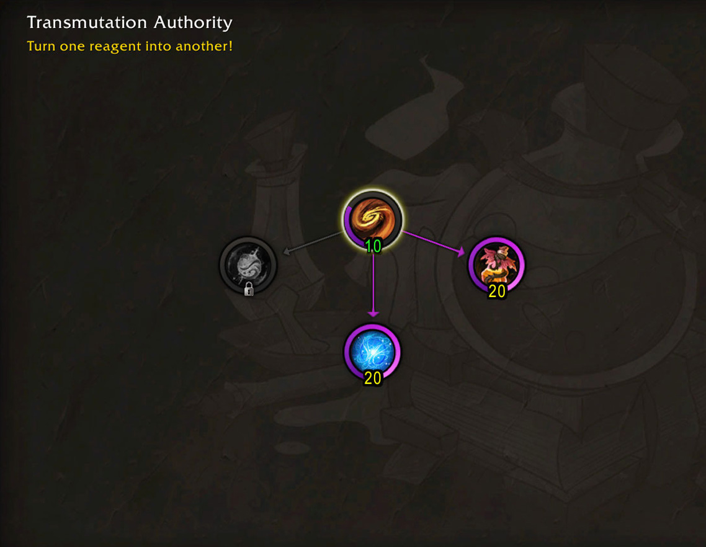
Option B: Resourcefulness
- 10 points into the Alchemy Mastery root node.
- 20 points into Reduce to get more Resourcefulness.
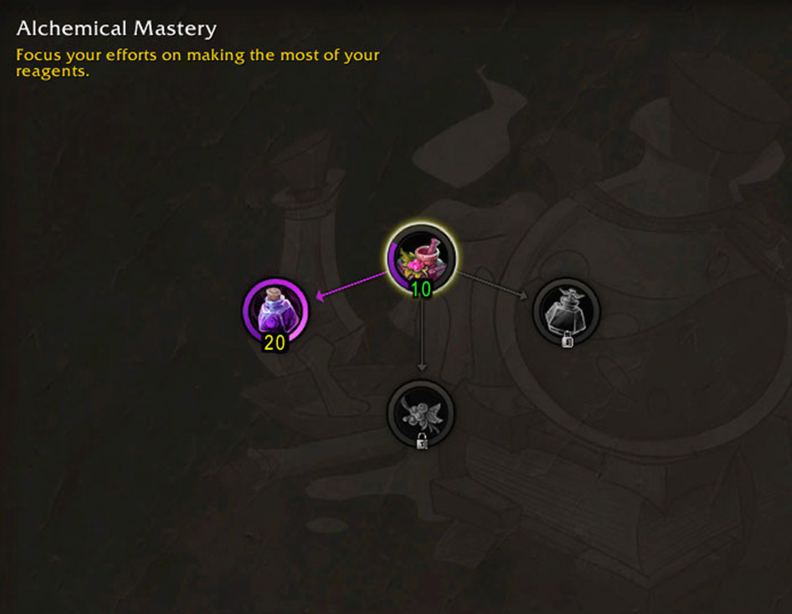
Phase 3: Gold Quality (60-100 Points)
I'm not 100% sure about this part yet. Motes don't benefit from extra skill since they have no quality. Only the daily CD and material transmutes benefit from it. Without knowing the price of each item, it's hard to say if it's worth going for Gold Quality. Here is what I tested so far:
- Silver Quality transmutes can give you Gold Quality materials.
- Gold Quality transmutes just have a lot higher chance to give Gold Quality materials, but you still get Silver Quality.
Whether this is worth the points depends on the price gap between Silver and Gold materials on your server.
- 30 points into the root node in Transmutation Authority
- 20 points into Synthesis Synergy
- Go back to the Alchemy Mastery tree and max out the root node.
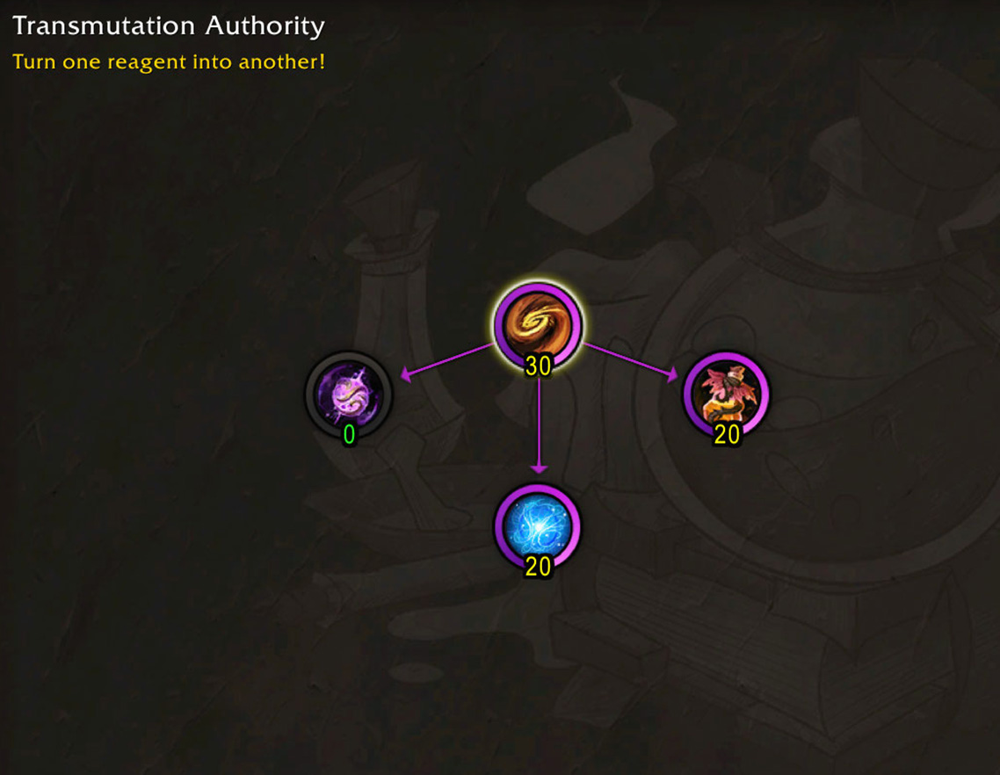
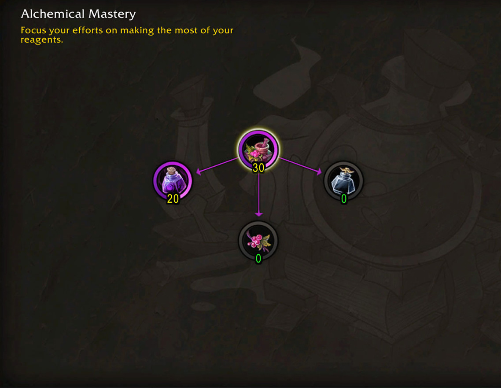
I'll update this section once I see how the first two phases play out and what players end up using the Wondrous Synergist for.